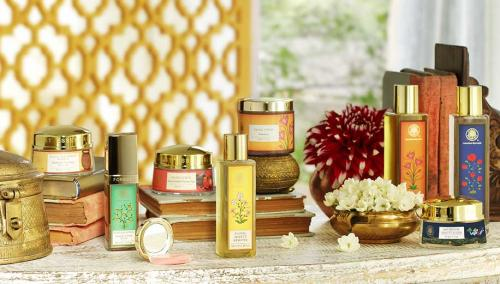
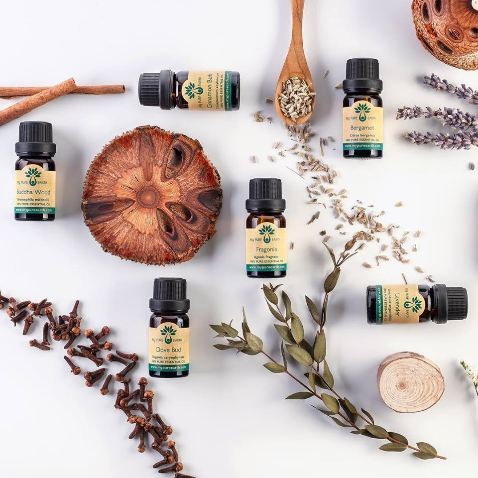
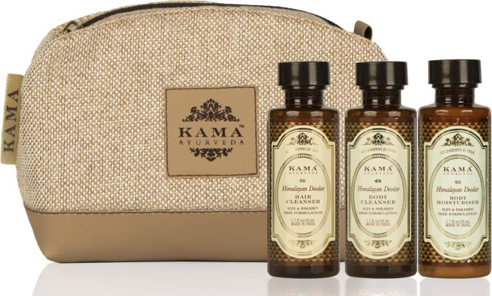
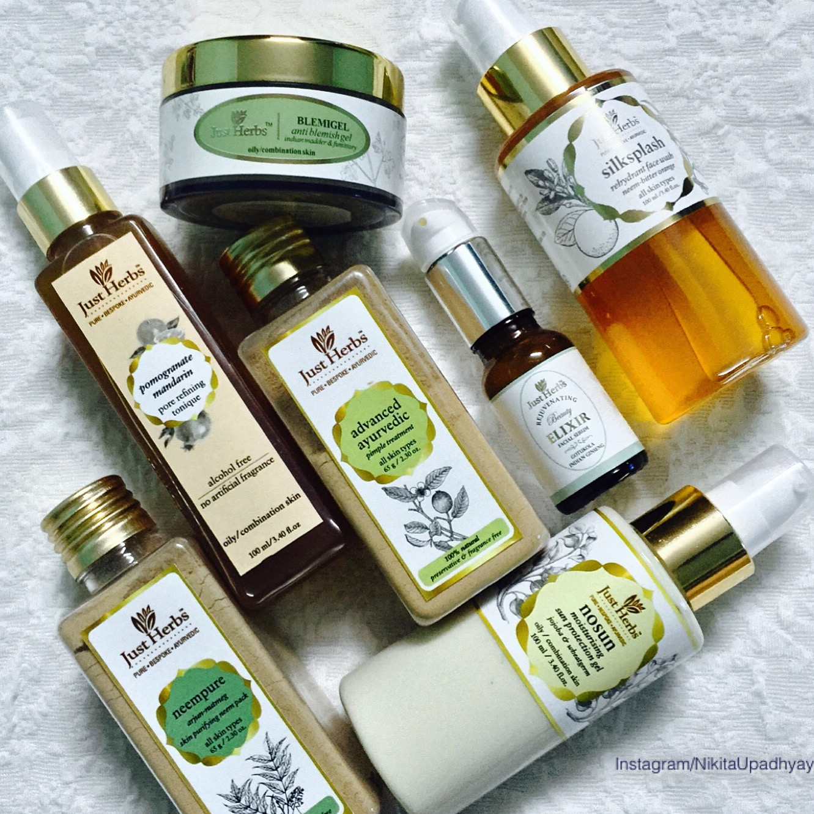

Heal your skin
The way it is meant to be.
Top 5 Organic Skincare Brands in India
We all want to look beautiful; not just to attract someone but also as many professions require good looking and attractive faces , which is impossible without religious skincare routine and products that actually work for the skin.There are many products available in the market but the organic ones have their own advantages. Organic skincare products as the name suggests are natural products that has no chemical effect or side effect on the body. Moreover they are easily available in the marketplace. And mostly all of them can be also purchased online.
At present we have a number of Indian companies that are coming up with their own organic products – safe for both the body and the environment. Moreover these brands are also helping the rural communities build sustainable living.
Here we list the top 5 organic beauty brands in India:
Home
Read more
|
Top 4 Organic Skincare Brands in India
We all want to look beautiful; not just to attract someone but also as many professions require good looking and attractive faces , which is impossible without religious skincare routine and products that actually work for the skin.There are many products available in the market but the organic ones have their own advantages. Organic skincare products as the name suggests are natural products that has no chemical effect or side effect on the body. Moreover they are easily available in the marketplace. And mostly all of them can be also purchased online.
At present we have a number of Indian companies that are coming up with their own organic products – safe for both the body and the environment. Moreover these brands are also helping the rural communities build sustainable living.
Here we list the top 4 organic beauty brands in India:
|
|

|
1. Forest Essentials
Forest Essentials is a leading organic beauty brand in India with its foundations in the prehistoric science of ‘Ayurveda’. Today Forest Essentials is an ideal Beauty Brand for many people both - men and women in the country where ancient beauty practices for skin and hairs have been brought to life. It mainly caters to four categories - Body Care, Facial Care, Hair Care and Wellness.
|
|

|
2. Purearth
Purearth is a luxury skincare and wellness organic beauty brand that ethically gathers all its ingredients from the Himalayas. There award-winning range of products addresses a growing perception towards clean and organic skincare products. Whether it’s the seabuckthorn from Ladakh and apricot from Uttarakhand, the ingredients that go into making are handpicked by women in the areas.
|
|

|
3. Kama Ayurveda
Kama Ayurveda that started in 2002 has become one of the most trusted organic beauty brands in India. They make their products using genuine Ayurvedic recipes, which are 100 percent natural as well as vegetarian. No artificial color or fragrance is added in it. Its products like Kumkumadi Miraculous Beauty Fluid have won many beauty awards.
|
|

|
4. Just Herbs
Just Herbs beauty brand is well known for its - pure, bespoke and Ayurvedic skincare products made from licensed organic and wild crafted elements. The idea behind Just Herbs was to build a organic beauty brand that not only stands for luxury items but also delivers a pure and pleasant experience to its customers, which is safe for their skin and the environment as well.
|